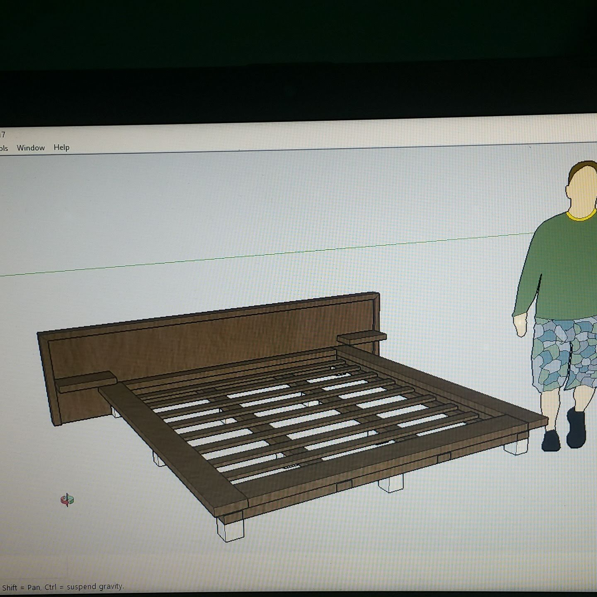

Design & Making
Modular Platform Bed
A modular furniture project carried from fabrication planning through client adaptation, transport and on-site installation.

The problem
Designing for everything that happens after fabrication.
A furniture project is not finished when its parts leave the workshop. It still has to survive handling and transport, fit the actual space, absorb client changes, and go together cleanly on site.
The platform-bed project required a practical delivery chain rather than a workshop-only solution.
My role
From fabrication planning through installation.
- Fabrication planning and procurement.
- Modular construction suitable for handling and transport.
- Responding to a client-requested adaptation without discarding the full build.
- Preparing the project for transport to another parish.
- On-site assembly and installation.
Approach
Plan → fabricate in modules → adapt → transport → install.
The modular approach was useful because it made the physical delivery problem easier to manage. It also gave the project room to absorb a requested change without forcing the whole build back to zero.
The project reinforces a principle I use elsewhere: handling, maintenance, adaptability and real-world use are part of the design problem, not cleanup tasks at the end.
Design evidence
A recovered SketchUp view closely matches the finished configuration.
The archived 3D-design material includes a SketchUp model with the same distinctive low platform, wide headboard and paired side-shelf arrangement visible in the completed bed.

Outcome
A completed physical build with a documented installation.
The bed was fabricated, transported and installed, and the completed result is now documented directly in this public case study.
Evidence boundary: the recovered SketchUp image is presented as archived design-stage evidence corresponding closely to the same bed configuration. The surviving archive does not independently establish the exact chronology or sole authorship of the model, so I do not use it to make a stronger authorship claim than the evidence supports.